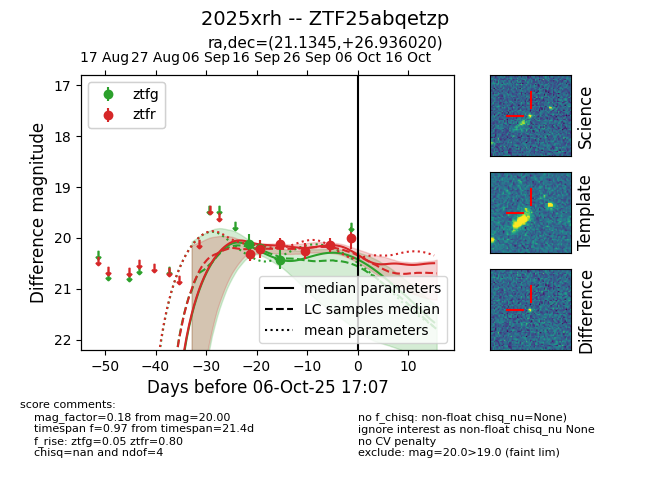
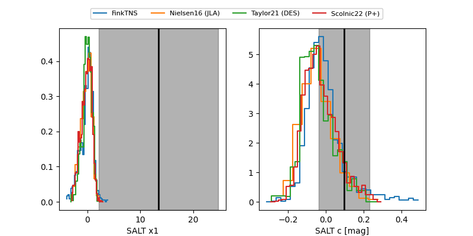

FINK: ZTF25abqetzp
Lasair: ZTF25abqetzp
ALeRCE: ZTF25abqetzp
TNS: 2025xrh
YSE: 2025xrh
ZTF25abqetzp (ztf,fink)
2025xrh (tns,yse)
equatorial (ra, dec) = (21.1345,+26.93602)
galactic (l, b) = (131.9834,-35.35329)


last ztfg=20.43, ztfr=20.00
3 ztfg, 6 ztfr detections